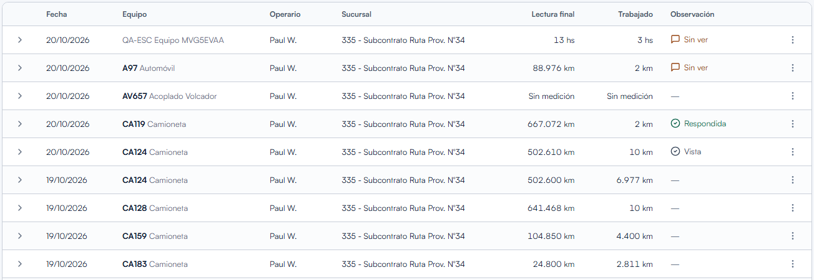

Módulo - Operación
Partes diarios: el registro de cada jornada
El parte diario es fundamental para AdminO. Cada equipo informa que hizo en el día y, con esos datos, la plataforma calcula horas y avisa cuando algo no está bien.

Qué registra cada parte
Un parte corresponde a un equipo en un día. Además del equipo, el operador guarda:
- Lectura del odómetro u horómetro al final de la jornada (kms u hs).
- Trabajo realizado: horas o kilometros, calculados contra el parte anterior.
- Combustible cargado, para medir el consumo por hora trabajada.
- Paros y su causa: franco, sin tarea, rotura, mal tiempo.
- Observaciones con las novedades del equipo. Que se respopnden desde el muro
Cómo se carga un parte
- Lectura del odómetro u horómetro al final de la jornada (kms u hs).
- Trabajo realizado: horas o kilometros, calculados contra el parte anterior.
- Combustible cargado, para medir el consumo por hora trabajada.
- Paros y su causa: franco, sin tarea, rotura, mal tiempo.
- Observaciones con las novedades del equipo. Que se respopnden desde el muro.
Partes diarios
Cada equipo registra lectura, horas, kilometros, combustible y paros desde el celular, aunque este en obra.
Flota bajo control
Sabé donde esta cada equipo, quien lo opera, cuando cargó su último parte y cuanto consume.